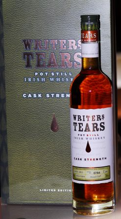

Page 1 of 2
Writers Tears Cask Strength

Posted:
Wed Aug 10, 2011 2:13 pmby TheWhiskeyBro
I heard a rumour that they might be bringing out a cask strength version of Writer's Tears
http://www.thespiritsbusiness.com/2011/ ... 1-results/Listed above is a cask strength 53% Writer's Tears winning a 'Master' award for their new whiskey.
Sounds like we could be due another fine release.
No mention on website or facebook page yet!
Re: Writer's Tear Cask Strength
Posted:
Wed Aug 10, 2011 3:30 pmby IrishWhiskeyChaser
Yes, I can confirm that too. I can't believe I had not mentioned it earlier

.
Shane Fitzharris (Brand Manager) told me they had plans for this at Whisky Live Dublin. But no definite date.
As it has been entered in a Competition must mean it is probably bottled and ready to go.
Re: Writer's Tear Cask Strength
Posted:
Wed Aug 10, 2011 4:16 pmby Michael Foggarty
September i believe with a launch night to boot.
Re: Writer's Tear Cask Strength
Posted:
Thu Aug 11, 2011 3:02 pmby Stephen
Yum yum yum .... I do like Writers Tears, anybody I've shared it with have subsequently gone out and bought a bottle of their own
Keep us informed on details please
Re: Writers Tears Cask Strength
Posted:
Thu Aug 11, 2011 5:58 pmby Liam Murray
Evening all from Kilkenny. I have just received this very afternoon a 50cl sample of the Writers Tears Cask.
We shall be tasting this with the staff probably tomorrow. If anyone is in Kilkenny this evening 11th August you are welcome to drop into the shop for a Cooley tasing from 7pm. Regards Liam
Will report on the Cask Strength asap.
Re: Writers Tears Cask Strength
Posted:
Tue Aug 16, 2011 7:07 pmby bredman
Looking forward to this.
Has there been any mention on price, or the size of release?
Re: Writers Tears Cask Strength
Posted:
Tue Aug 16, 2011 8:27 pmby Liam Murray
Evening all from Kilkenny. As promised here is a quick tasting report on the Writers Tears Cask Strength. I got fed up waiting on the staff to taste so i just blazed away this evening.
Colour ... Darkl honey
Legs.. quite thin
Nose. Marzipan, Allspice and heather
Palate.. Initial sweetness followed by dark bitter chocolate, with a pleasing dry finish, though a little short.
Regards, Liam
The Wine Centre.
Re: Writers Tears Cask Strength
Posted:
Sat Aug 20, 2011 11:49 amby Michael Foggarty
The launch night of this will take place at L. Mulligan Grocer on Monday 5th September 8 pm.
This is an invite only event, with bar regulars and trade getting priority, any remain places will be offered to those who email michael at lmulligangrocer dot com requesting a spot.
Re: Writers Tears Cask Strength
Posted:
Fri Sep 30, 2011 4:19 pmby matt
It is coming to the retailer.
Ally has it, for 120 box
Is there somebody out there that had the chance to try it? Is it worth that money?
Cheers
Re: Writers Tears Cask Strength
Posted:
Sat Oct 08, 2011 10:59 pmby matt
Now information out there

The CWS has up a new picture. nice idea for the packaging

Just wondering how the content is
Re: Writers Tears Cask Strength
Posted:
Sun Oct 09, 2011 12:46 pmby Liam Murray
Sunday morning coming down in Kilkenny. I hope to have the Writers Tears Cask Strength on tasting in the shop for the Society trip next Friday in Kilkenny, I emphasise "hope" Regards Liam (at work in The Wine Centre) Murray. Kilkenny
Re: Writers Tears Cask Strength
Posted:
Wed Oct 12, 2011 2:44 pmby Liam Murray
Good afternoon from Kilkenny. I can now confirm that I shall have the Cask Strength Writer's Tears on tasting for the Big Visit on Friday day in our shop. Hope to see as many people there as is possible. Yummmm !
Re: Writers Tears Cask Strength
Posted:
Wed Oct 12, 2011 5:32 pmby TheWhiskeyBro
Hi Liam,
there will be a wee crew coming down, hopefully supplemented by a few locals, see you Friday,
Cheers Leo
Re: Writers Tears Cask Strength
Posted:
Wed Oct 12, 2011 5:37 pmby Liam Murray
Good evening, Leo. I'm just haveing a Redbreat 15 yrs matched with O'Hara's Leann Follain stout. Yes, we shall have a local supplement at the tasting and as a bonus I believe the boys downstairs in the shop will be tasting German beers, that means you have to walk past the beers to get to the whiskey tasting. Hmmmmmmm!
Liam
Re: Writers Tears Cask Strength
Posted:
Fri Oct 28, 2011 5:06 pmby matt
Cant really find a lot of information about the cask strength in the net.
I belief too know from which distillery the first released Writers tears comes from.
But is it 100% sure that the cask strength is from the same distillery

I am not sure, has somebody more information
Cheers
Re: Writers Tears Cask Strength
Posted:
Sun Nov 27, 2011 9:57 pmby IainB
Is this meant to be a pot still malt blend like the regular edition? I ask because the regular edition says 'pot still blend' while this just says pot still whiskey. Doesn't taste like pps/sps to me so are we back to calling malt 'potstill' again?
Re: Writers Tears Cask Strength
Posted:
Sun Feb 12, 2012 3:37 pmby Malt-Teaser
Hi everyone, I guess you all know this one by now and it'S me that's a little behind times, but yesterday I met Shane the Brand Ambassador at FInest Spirits Munich and had a long chat with him about the products.
He tells me that Ireland, or is it the Irish Government is doing its usual promotion on Irish whiskey and the typical price over there is around €120, whereas here in Germany we have to suffer with about €75.
But then he also assures me that the bottle in the pictures to follow is the last available in Germany

But then again I did get the last drops from what was the penultimate bottle in Germany

It's good stuff and I'll put my review online in the next couple or so weeks, when I catch up with my rather massive backlog of notes and samples.
Meanwhile, for those not lucky enough to see it, here are some pictures which I may have to spread across a couple of posts if I'm not allowed to get them all into here .....

- WT3-sm.jpg (55.1 KiB) Viewed 3601 times

- WT2-sm.jpg (60.22 KiB) Viewed 3601 times
- 
- WT1-sm.jpg (63.35 KiB) Viewed 3601 times
Edit: It looks like it may have worked.
Re: Writers Tears Cask Strength
Posted:
Sun Feb 12, 2012 10:42 pmby IrishWhiskeyChaser
Thanks for sharing Keith, keep up the good work
Re: Writers Tears Cask Strength
Posted:
Tue Feb 14, 2012 12:04 amby IainB
IainB wrote:Is this meant to be a pot still malt blend like the regular edition? I ask because the regular edition says 'pot still blend' while this just says pot still whiskey. Doesn't taste like pps/sps to me so are we back to calling malt 'potstill' again?
Sorry to quote myself but while we're one the subject of this whiskey does anyone have an answer to this question? It clearly says pot still whiskey. Yet I thought it was a blend of potstill and malt. Could such a whiskey technically be called pot still in the same way cooley to to call malts pure pot still. And if it's a blend of 2 whiskey types it seems to be stretching things a little. Also, are the pot still and malt both from Midleton or does that explain the lack of the word single or pure?
Re: Writers Tears Cask Strength
Posted:
Tue Feb 14, 2012 12:19 amby DavidH
IainB wrote:Sorry to quote myself but while we're one the subject of this whiskey does anyone have an answer to this question? It clearly says pot still whiskey. Yet I thought it was a blend of potstill and malt. Could such a whiskey technically be called pot still in the same way cooley to to call malts pure pot still. And if it's a blend of 2 whiskey types it seems to be stretching things a little. Also, are the pot still and malt both from Midleton or does that explain the lack of the word single or pure?
I'd say we understand one thing by "blend" and another thing by "pot still", neither of which Writers Tears is. I'm still waiting to see the legal definitions the distilleries collectively have been working on for submission to the EU.
It's up to IDL, I'm sure, how WT gets to describe itself. Perhaps we should keep an eye on their bottles now that IDL itself has gone big on SPS.
As for the distillery origin, we are not allowed to say. It could have "single" on the label though.
Re: Writers Tears Cask Strength
Posted:
Tue Feb 14, 2012 6:58 pmby IainB
DavidH wrote:As for the distillery origin, we are not allowed to say. It could have "single" on the label though.
Mmm, very mysterious Im sure!

Not allowed by whom?
So if i read this correctly I'm right in thinking it's a blend of Potstill and Malt. It's a pity then, given that cooley have stopped calling "single malts" "pure pot still", that the cask strength say "Pot Still Whiskey". Or maybe I'm just being pickey.
Another question - I heard some say once they thought this was a 21yo. It tastes much younger to me. Any idea anyone?
Re: Writers Tears Cask Strength
Posted:
Tue Feb 14, 2012 7:39 pmby JohnM
I'm hoping it's a bad whiskey, so I don't have to buy it.
In fact, it would be great if this website could suppress all good reviews so I don't spend any more money on whiskey.
Re: Writers Tears Cask Strength
Posted:
Tue Feb 14, 2012 8:02 pmby DavidH
IainB wrote:DavidH wrote:As for the distillery origin, we are not allowed to say. It could have "single" on the label though.
Mmm, very mysterious Im sure!
Not allowed by whom?
It's just the distillery's condition that it not be named. Don't want to get Writers Tears into hot water (I don't go for those hot whiskeys) so it's enough to say that it contains an SPS component.
Regarding the Cask Strength, I couldn't seem to get my hands on any info. I'm looking forward to Malt-Teaser's article.
Re: Writers Tears Cask Strength
Posted:
Tue Feb 14, 2012 8:17 pmby JohnM
It's pot still and malt whiskey. I wonder if the distillery it's from has any old malt whiskey? I have no idea.
Re: Writers Tears Cask Strength
Posted:
Tue Feb 14, 2012 9:31 pmby IainB
JohnM wrote:It's pot still and malt whiskey. I wonder if the distillery it's from has any old malt whiskey? I have no idea.
The thing about the potstill distillery is that they may still have stock from a former associated distillery.